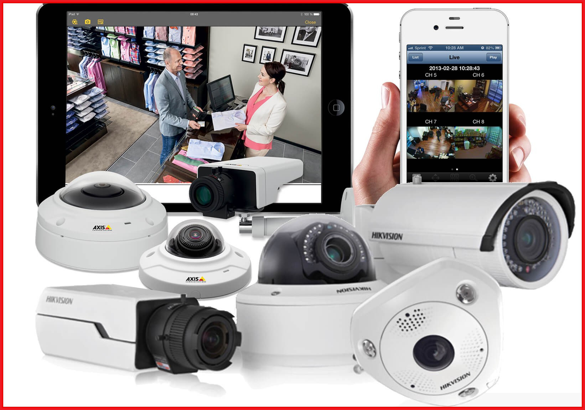

Más información
Las cámaras de seguridad se presentan en una variedad de formas y tamaños, cada una diseñada para propósitos específicos. Las cámaras de interior, a menudo más discretas, se utilizan para monitorear áreas como salas de estar y oficinas, mientras que las cámaras de exterior, más robustas, protegen perímetros y entradas. Las cámaras tipo bala, con su forma alargada, son visibles y disuaden a los delincuentes, mientras que las cámaras domo, más discretas, se integran en diversos entornos.
Las cámaras PTZ ofrecen la flexibilidad de controlar la dirección y el zoom de forma remota, y las cámaras con visión nocturna garantizan la vigilancia en la oscuridad. Según su tecnología, encontramos cámaras analógicas, las más tradicionales, y cámaras IP, que ofrecen mayor calidad de imagen y funcionalidades avanzadas. La resolución, el ángulo de visión, el almacenamiento y la detección de movimiento son otras características clave a considerar al elegir la cámara de seguridad adecuada para tus necesidades.